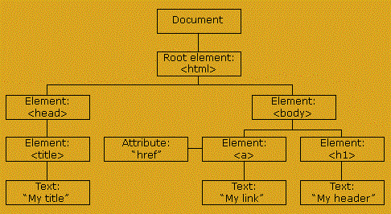

Định nghĩa
1: DOM (document Object Model)

Là quy chuẩn các thành phần của web thông qua Html để tạo lên trang webTừ mô hình trên ta có thể thấy dựa vào DOM ta có thể thay đổi chỉnh sửa điều hướng các đối tượng thành phần chính như element, attribute, text đây là các thành phần chính tạo nên các thẻ HTML
EX: thẻ < a href=""> my_link </a>"
- a là element
- href là attribute
- my_link là textGet element method
Ta có thể thông qua document để truy xuất các thẻ. Từ đó ta có thể sử dụng các hàm có sẳn trong nó- ID
Systax: var node = document.getElementById('ID');
node trả về element của Id đó
EX: <h1 id="abc ">Hello </h1> sẽ trả về h1 là element của ID, Trả về null khi đặt cùng id hoặc sai id. - Class
Systax: var node = document.getElementsByClassName('123');
Vì class có thể khai báo trong nhiều element nên nó sẻ trả về nhiều phần tử hơn gọi là HTML Collection có cấu trúc tương tự mảng.
Như vậy để truy cập tất cả các phần tử ta cần dùng đến vòng lặp để duyệt chúng. - Tag
Systax: var node = document.getElementsByTagName('img');
Trả về tất cả các elment cùng loại - CSS selector
Systax: var node = document.querySelector('hmtl p .cla');
Trả về chính xác element mà bạn muốn trỏ đến, cú pháp trong '' tương tự quan hệ cha con trong CSS. Trong trường hợp có nhiều element thỏa mãn thì sẽ trả về elment đầu tiên. Tuy vậy để nhận được tất cả các element đó ta có thể sử dụng document.querySelectorAll('xyz..') để nhận về NodeList (truy cập như mảng). - HTML colection
Thường được sử dụng ở các elment đặc biệt như thẻ a, form, ... đọc thêm ở google để rõ hơn nha.
- Note
Nếu các element được lấy từ các phương thức trên là cha của các element con khác thì element cha có thể sự dụng lại các phương thức trên để tiếp tục truy xuất.
- CHỉ có getElementsById() và querySelector() là tra về 1 đối tượng duy nhất còn lại điều trả về NodeList hay HTMLCollection.
- ID
-
innerHTML outerHTML
- Lấy các thẻ HTML
* Để lấy tất cả các các thẻ con bên trong một element ta sử dụng:
element.innerHTML
* Để lấy toàn bộ thẻ con và thẻ cha của một element ta sử dụng:
element.outerHTML - Thiết lập các thẻ HTML
Ta có thể sử dụng toán tử bằng để thiết lập các thẻ mới thay thế các thẻ của element hiện tại
Tương tự ở ý trên để thay thế các thẻ con bên trong element bằng một hay nhiều thẻ khác:
element.innerHTML = '<h1 > xuanPhuoc </h1 >'
Trường hợp muốn thay đổi luôn cả element hiện tại ta sử dụng
element.outerHTML = '<h1 > xuanPhuoc </h1 >'
- Lấy các thẻ HTML
DOM attribute
Sau khi lấy được các element ta có thể thực hiện thay đổi phần attribute hay text trong phần này chúng ta sẽ tìm hiểu các cách để lấy hoặc chỉnh sửa các thuộc tính trong attribute.- Khởi tạo attribute:
* Để thiết lập một attribute mới ta có thể dùng các attribute có sẳn hợp lệ thông qua dấu chấm sau đó tiến hành gán giá trị cho attribute vừa khởi tạo (ster)
ví dụ: ban đầu bạn có thẻ sau: <a > hello <a >
var x= document.querySelector('a') // lấy element từ document ra.
x.href ='phuoc.com'
khi đó thẻ trở thành: <a href = 'phuoc.com'> hello <a >
* Để thiết lập một attribute mới nhưng k có sẵn trong thẻ đó ta dùng cú pháp sau
x.setAttribute(a,b)
Trong đó: + x: là element được gọi tới
+ a: là attribute mới.
+ b: là giá trị của attribute
- Truy xuất giá trị attribute.
Nếu các attribute là hợp lệ ta có thể lấy giá trị qua toán tử chấm
VD: abc.href với abc là thẻ a Để truy xuất các attribute không hợp lệ ta dùng:
x.getAttribute('nameAttri')
- Khởi tạo attribute:
InnerText and textContent
- Lấy giá trị của Text
Ta có thể dùng 2 cú pháp sau:
+ element.innerText
+ element.textContent
- Chỉnh sửa giá trị Text
Ta có thể dùng 2 cú pháp sau:
+ element.innerText = noidung
+ element.textContent = noidung
- Phân biệt innerText và textContent
innerText chỉ hiển thị những gì hiện trên web
textContent hiển thị nội dung của HTML
seach google để biết rõ hơn.
- Lấy giá trị của Text
DOM CSS
Từ elment ta có thể truy cập thuộc tính style
elment.style.width =100px
Lệnh trên dùng để chỉnh style độ dài lại cho element . các cú pháp trên tạo ra css inlineClass list
Từ element ta có thể truy cập thuộc tính classList
Đây là thuộc tính cho phép ta thao tác được với các class trong thẻ. Thông dụng nhất ta có 5 thuộc tính sau
- ADD
Dùng để thêm class mới vào thẻ, element.classList.add('class1', 'class2')
- Contains
Kiểm tra class có nằm trong classList không element.classList.contains('class1') trả về bool
- Remove
Loại bỏ class ra khỏi classList element.classList.remove('class1')
- Toggle
Nếu tồn tại class1 thì xóa, nếu không thì thêm class1 vào classList
element.classList.toggle('class1')
- ADD
DOM event
DOM event là các thuộc tính giúp ta nhận biết, và xử lý, trong quá trình giao tiếp với người dùng như click, hover, stroll...
Trong Javascript có rất nhiều event các bạn có thể tham khảo thêm ở đây
Có hai cách để thêm DOM event vào HTML:- Attribute event
Ta có thể viết ngay trong attribute.
ex: <h1 onclick='console.log('phuoc')' > hello< h1 >
Điều này có nghĩa mỗi lần click vào h1 thì console hiển thị 'phuoc'
Giá trị được gán cho onclick hay các event khác đoạn mã Javascript được thêm trong dấu '' - Assign event using the element Node
B1: get được element muốn thêm sự kiện.
B2: element.onclick = function(){
console.log('phuoc')
}
Với ý nghĩa như phần đầu nhưng ở đây ta truyền event theo cách khác
- Attribute event
DOM EVENT INPUT
Phần này giúp bạn biết và hiểu được một vài event thông dụng.
- Input
Trong thực tế ta thương làm việc với form rất nhiều, nên việc lấy dữ liệu từ các thẻ input vô cùng phổ biến.
Để lấy được input đầu tiên bạn phải lấy được element mà mình muốn (ở đây mình đặt nó là element ) bằng các thuộc tính từ document đã nói ở Phần 2
Sau đó dùng cú pháp bằng 2 cách sau sau:
1: element.onchange = function(e){
console.log(e.target.value);
}
Lệnh trong function được thực thi khi user click ra khỏi khung input và giá trị đó phải khác giá trị trước đó.
2: element.oninput = function(e){
console.log(e.target.value);
}
Lệnh trong function được thực thi khi user thực hiện từng thao tác.
- Input
PreventDefault and StopPropagation
- PreventDefault
Dùng để ngăn chặn các thuộc tính mặc định ví dụ ấn vào text của thẻ a thi sẽ dấn đến link đó.
Systax: e.preventDefault();
Với e là biến e trong function của các event. - StopPropagation
Dùng để ngăn chặn sự nỗi bọt của event vd: cả thẻ con và thẻ cha điều có event nhưng khi tác động vào thẻ con thì event của thẻ con và cha điều được thực hiện. Để ngăn chặn việc đó (chỉ kích hoạt event của thẻ con) ta dùng StopPropagation
Systax: e.stopPropagation()
Với e là biến e trong function của các event.
- PreventDefault
Event listener
Event lisener cũng tương tụ như DOM event. Sự khác nhau của chúng là các nhận biết sự kiện và xóa sự kiện . Khi muốn xóa DOM event thì ta sẽ phải gán lại sự kiện đó cho một hàm trống. Với lisener ta chỉ cần dùng phương thức có sẳn để gỡ bỏ.
Systax: element.addEventListener('even', function(){
lệnh
})
Systax: element.removeEventListener('even', function(){
lệnh
} )